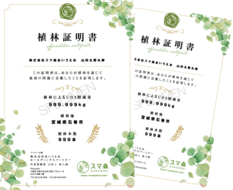

その名も
「スマ森」
 スマ森兄さん
スマ森兄さんその名も
「スマ森」
こんな課題はありませんか?
そのお悩み、「スマ森」が
解決します
「スマ森」とは
1本から植林活動に参加できるプラットフォームです。
企業のサスティナビリティ活動として参画でき、適切な森づくりを通じて自然災害の防止、
地域課題の解決、そして、CO2の吸収によるカーボンニュートラルに貢献できます。
地域課題の解決、そして、CO2の吸収によるカーボンニュートラルに貢献できます。
環境問題の解決に、貢献できる
プロジェクトを通じて、二酸化炭素排出量の削減など、社会問題の解決に貢献できる。
植林証明書の発行により、どこに何本、植林されたかを明確に表すことができる。
取引先・お客様のファンが増える
取引先・お客様もサービス・商品の購入を通じて、植林に対して共にチャレンジができる。
また、新たなコニュニケーションの機会が得られる。
また、新たなコニュニケーションの機会が得られる。
採用ブランディング
社員エンゲージメントの向上に繋がる
社員エンゲージメントの向上に繋がる
社員が自社サービスの販売・促進を通じて、社会に貢献できることを体験できる。
植林イベント参加を通じて、社員の環境教育の機会が得られる。
「スマ森」の仕組みについて
スマ森が企業様に代わり木を植え、その証明書が発行できるサービスです。
企業様の商品・サービスをエンドユーザー様が購入し、その情報をスマ森に登録することで植林地に木が植えられます。
そして、その植林証明書が企業様・エンドユーザーの双方に 発行されることでこの活動を支えていきます。
そして、その植林証明書が企業様・エンドユーザーの双方に 発行されることでこの活動を支えていきます。
①企業様の対象商品・サービスをエンドユーザー様が購入。
②企業様がスマ森で植林申請を行う。
③スマ森でエンドユーザー様用の植林証明書を発行。
④エンドユーザー様へ植林証明書をお渡し。
⑤スマ森が植林活動を実施。
⑥月1回と年1回の企業様用の植林証明書が発行される。

植林証明書は、企業様及びエンドユーザー様が植林を通じて地球の問題に貢献されたというスマ森独自の証明書となります。
企業様の商品・サービスを購入されたエンドユーザー様の情報をスマ森に登録すると、エンドユーザー様用の植林証明書が発行されますので、現場で直接お渡しいただけます。
企業様用には、月1回と年1回、期間中にまとめたCO2削減量、植林地・植林本数の植林証明書が発行されます。ぜひSDGsの取り組みにご活用ください。
植林地点について
植林地点は、現在植林を必要としている地域を選定し、随時変更。
現在は「内モンゴル」「石巻市」が植林対応です。
現在は「内モンゴル」「石巻市」が植林対応です。
内モンゴル
毎年急速に砂漠化が進んでいます。その理由には雨が少ないこと、最高級と言われるカシミヤセーターの原料の採れるカシミヤヤギの過放牧があります。ヤギは草を根っこから食べてしまうため、土地の保水力が弱くなり、乾いた気候も影響して砂漠化が進んでしまいます。 そして、そのカシミヤの90％は、日本へ輸出されています。砂漠化によって、食料不足や貧困の増加、黄砂の発生など暮らしに大きな影響が起こっています。
宮崎県石巻市
「南浜津波復興祈念公園」内に、潜在自然植生に合わせた樹種を専門家が選定し、自然に近い形で（密植させて）植樹します。樹木同士が競い合い、自然沙汰されその場所やバランスの中で必要な木が残ります。
そのため、必ずしも大きく育つとは限りませんが、100年後には、植えた木の数本だけが残るその過程で、本来のその土地の木々が育ちます。そのきっかけになる植樹です。もし津波が来たときに、この街の未来の子供たちと財産を守れる森の防波堤です。
サービス
SERVICE
1本から植林活動に参加できるプラットフォーム
「スマ森」の3つの特徴
植林証明書発行
プロジェクトを通じて、二酸化炭素排出量の削減など、社会課題の解決に貢献できる。
植林証明書の発行により、どこに何本、植林されたかを明確に示すことができ、企業のサスティナブル活動として活用できる。
HPへ掲載
スマ森HPへ導入企業一覧掲載。導入企業様のHPにもCO2削減、植林本数、掲載。
植林ツアー開催
植林イベント参加等を通じて、社員の環境教育の機会が得られる。
社員が自社サービスの販売・促進を通じて、社会に貢献できることを体感できる。
導入検討事例
WORKS
おかげさまで、多くの企業様にご導入いただいております！
3月31日までのお申し込みで 9月30日まで!
加盟初期費用
通常15,000円
0円
月額プラット
フォーム使用料
フォーム使用料
通常15,000円
0円
今なら植林費用の3,900円~始められます！
基本料金
PLACE
加盟初期費用
15,000円(税抜)
初回のみ
植林費用（国内一本あたり）
3,900円~(税抜)
月次締め料金発生
月額プラットフォーム使用料
2,980円/月(税抜)
月次締め料金発生
ご利用の流れ
FLOW
※個別で無料相談無く、HPの入会申し込みより、直接申し込みも可能です。